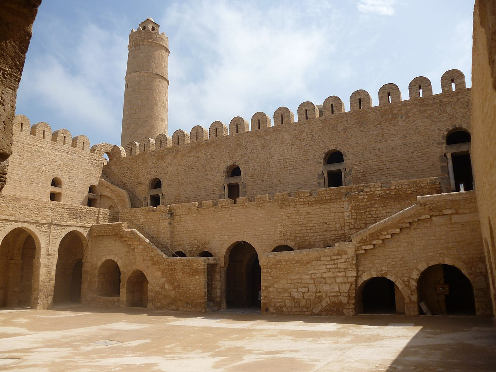
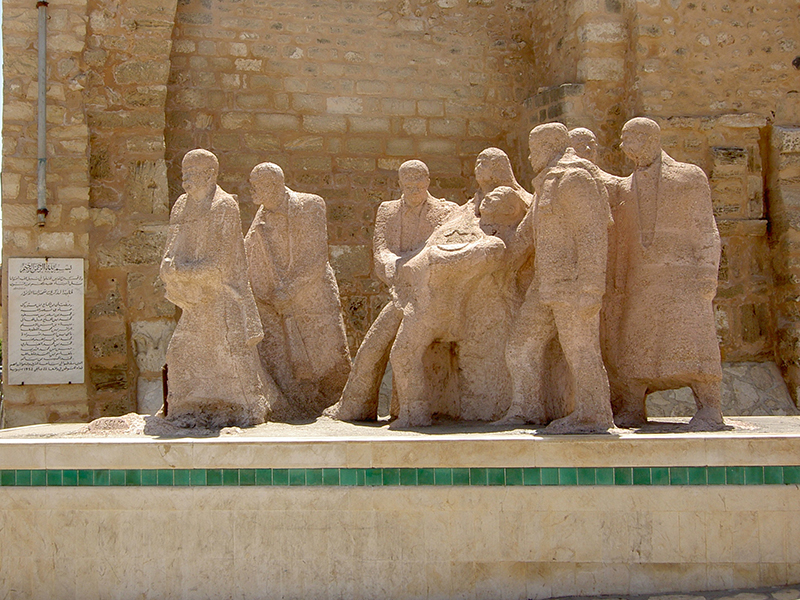
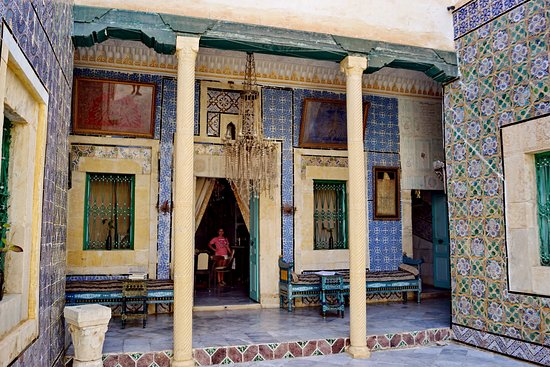
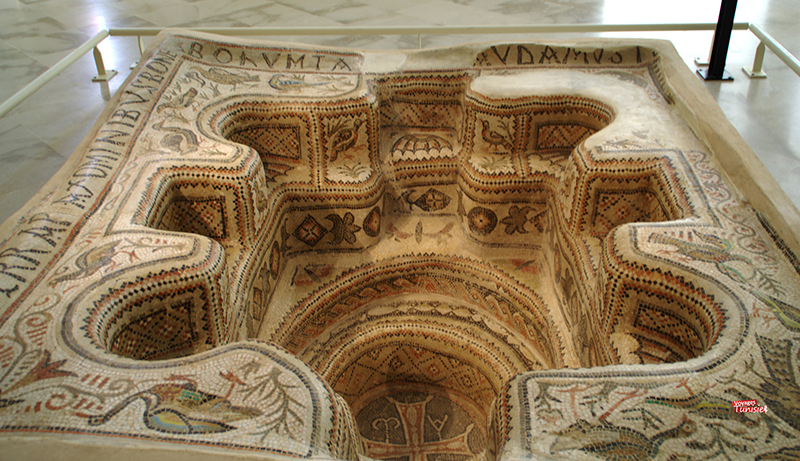
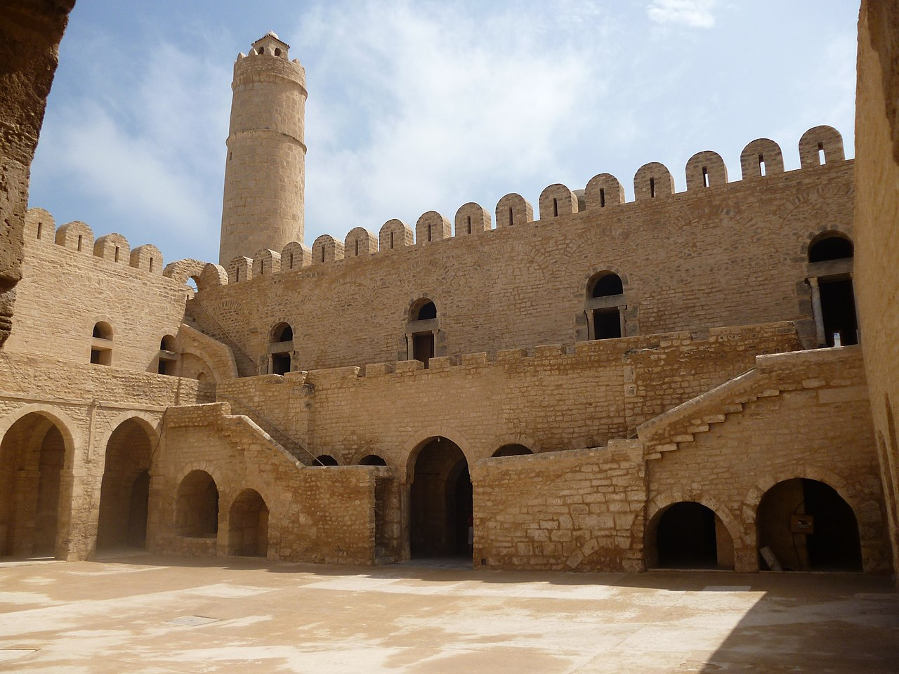
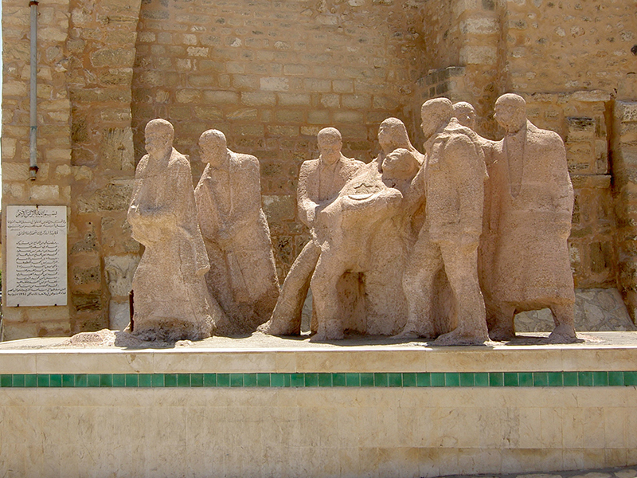
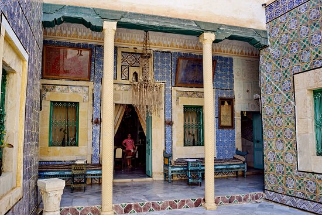
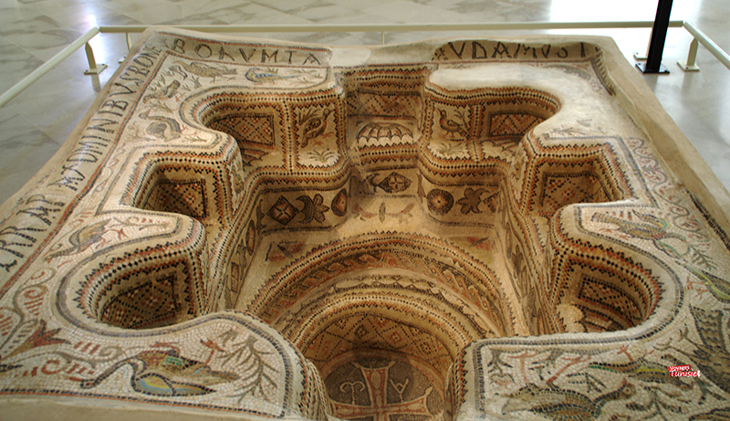

Sousse occupe un emplacement géographique au centre de la Tunisie, sur le littoral du Sahel donnant sur la mer Méditerranée bordant l'Est du pays.La ville s'étend sur 45 km² et se situe à 25 mètres d'altitude. Cette ville portuaire de l'Est de la Tunisie, située à 143 kilomètres au sud de Tunis, et ouverte sur le golfe d'Hammamet (mer Méditerranée).

Le début de la période arabo-musulmane peut être fixé à 670, lorsqu'Oqba Ibn Nafi al-Fihri assiège la ville qui prend le nom de Sousse. Elle est d'abord une agglomération pourvue en 787 d'un ribat et habitée essentiellement par des ascètes chargés de la défense des côtes. Le nouvel essor de Sousse vient du second prince aghlabide Ziadet-Allah Ier qui dote la ville d'un chantier naval (821) d'où partent les navires à la conquête de la Sardaigne (821), de Malte, de la Sicile (827) ou de Rome (846). Au ixe siècle, la ville s'est ouverte et accueille des musulmans, des chrétiens et des juifs. Elle devient alors la seconde ville de l'Ifriqiya et la première du Sahel. Durant la période fatimide, la prospérité de Sousse ne souffre que modérément de la fondation de Mahdia. La ville, qui exporte ses étoffes en Orient et en Occident, est aussi une prospère cité oléicole.

Plongez dans la culture tunisienne en visitant les sites traditionnels principaux de Sousse : sa vieille ville (médina) et son Ribat d'où vous pourrez admirer une vue imprenable sur la ville. La Médina de Sousse est entourée par des murs épais et fortifiés de 8 mètres qui furent construits sur les restes des fortifications Bizantines originales. La vieille ville propose de nombreux sites à découvrir parmi lesquels la Grande Mosquée et le ribat, forteresse du 18e siècle avec ses vues à couper le souffle sur la ville. Même ceux qui n'aiment pas sites historiques auront plaisir à se balader dans les rues colorées de la médina.

 






